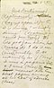
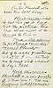
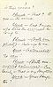
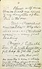
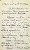
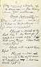
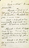
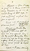
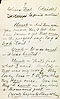
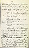
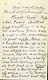
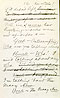
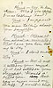
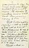
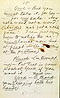
York (Continuing) (Rapturously) <O, it> (Gazing upon it)--O, it is divine!--simply divine! (Looking around furtively) It's like profanation, but (Kisses it) I do it rev-- (Kiss) reverently. O, as reverently as if (Kiss) it were a pagan's idol & I were (Kiss) the <humblest> meanest & the humblest pagan among all her host of adorers. (Kiss)
Plunkett (aside)--Hello, but he's got it bad. Got the picture, too. Well, 'at's all right, it belongs to him--
(York is still adoring the picture--hasn't discovered Plunkett.)--
But if he asks questions, what'll I----She told me to keep still about to-day's talk.
York (discovers Plunkett & is confused.) O, is that you? Tell me (feigning indifference)
Plunkett--That? O yes--it's mine.
York--But I mean, who does the original belong to.
Plunkett--(with simplicity) Belongs to me.
York--(astonished) To you!
Plunkett--(with unruffled calmness)--Certainly--that is my daughter.
York--Your daughter?
York--(trapped into animation)--Why she's divi--a--a-- (confused again)--very good looking.
(Music.) Enter Ah Sin, U.E., with huge carpet bag to get the gold.
---- me gittee that gold.
He sees the 2 men--steals aside & then steps around pocketing little things--pockets York's revolver, he being
Ah Sin (aside)--Leckon him never see photograph before.
Plunkett--Yes--yes--she's well enough, though nothing to what her mother was at her age. Born rich, but didn't spoil her--she's as lowly & simple as a cauliflower. Say--how's stocks to-day?
York--(absently) Stocks? What kind of stocks?
Plunkett--What kind?
York (absently)--Yes--O yes--certainly. (Intent on picture)--(musingly) O, she's unrivaled!
Plunkett--Head of the list, hey? By George I said it, a week ago I did, that very thing. Now that's beautiful.
York--O, most beautiful!
Plunkett--Now all she wants is the right sort of handling-- <& if> but she's never had it.
Plunkett--It's just as I tell you, & I ought to know. O, the leather-headedest job 't ever was.
York--And yet what a perfectly exquisite result. It seems incredible.
Plunkett--Well, it does. But it's so. First, they'd crowd her every way they could think of, for a spell--
York--O, that was so unwise--& such a pity.
York--O, shameful, shameful! (aside) Poor child; poor child!
Plunkett--That's the word. Shameful. You've got it. Yes, Sir, one spell they'd do the right thing by her, & get her up so ship-shape & gay, that it would done your soul good to look at her.
York--I can easily
Plunkett--And then again, you know, they'd let her run down & get ornery--O, perfect rag-tag & bob-tail!
York--It was cruel--it was brutal!
Plunkett--That's just what I said. Brutal--that was my word. Why looky-here--I'll tell you what they done once. You see, they'd sunk on her about a thousand feet--
(York begins to stare at him)
York--(interrupting) An air shaft?
Plunkett--Yes--an air shaft--&--
York--An air--
Plunkett--(interrupting in a loud, annoyed voice)--Yes an air shaft, you ass!--are you <hard o' hearing> deaf? Sunk an air shaft on her, 'bout a thousand feet, then they drifted south 300 feet & couldn't find anything.
Plunkett--(loud) That's what I said. Couldn't find anything--so they cut across from wall to wall--she was about 13 foot wide, there--& timbered her up so she wouldn't cave in--just stoped [sic] her out, you know, till she was as empty as a jug--& then what do these everlasting fools do but put in a blast--'bout 2 ton of nitro-glycerine . . . & by George when that blast went off
York--(interrupting) Who are you talking about?
Plunkett--Who! I ain't talking about any who. <Who'd you spose I was talking 'bout?> I'm talking 'bout the Mary Ann.
York--The Mary Ann.
York--I supposed you were talking about your daughter.
Plunkett--(stares at him about a minute) What have you been eating to-day?
York--I don't know. Why?
Plunkett
Well it's well it settled on your mind. If it had settled on your stomach 'twould a' killed you. But say--never mind my chaff. I wouldn't hurt
York--(interrupting eagerly)--Not a word of that, not a word! It's a pleasure to me to lend it--a pleasure! (forcing the $15 on the reluctant Plunk.) There, take it--Yes, I assure you I can spare it--to you!
Plunkett--But--
York
O, thank you, thank you! (seizing both his hands)